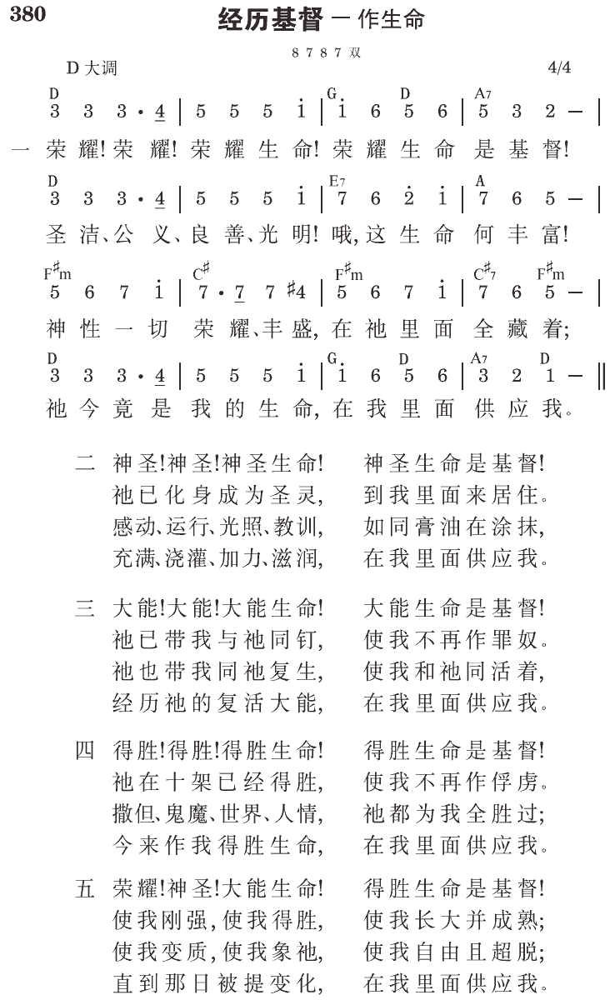

西3:4 基督是我们的生命，祂显现的时候，你们也要与祂一同显现在荣耀里。
那是灵的基督所赐给我们的生命
圣经说，“赐人生命的乃是灵。”（约六63）但灵赐给人的是怎样的生命？我们知道，生命的形态有很多种。这个世界上，有植物的生命和动物的生命。植物的生命层次较低，而动物的生命层次较高。但比这二者更高的是人的生命。这些生命都很奇妙。但是，除此之外，还有第四种生命─神圣的生命，就是神非受造的生命。
最高的生命
这最高的生命有什么特性？第一，神的生命是神圣的。神圣的意思是源于神，有神的性情，而且是超越的，有别于一切别的事物。只有神是神圣的，所以祂的生命也是神圣的。再者，神的生命是永远、非受造的，无始亦无终。我们众人都有特定的生辰时日，而且我们都清楚，我们也有确定的大限之期。然而，神的生命没有起始，并且恒久长存。神是自有永有者，祂的生命不衰残、不改变。神永远的生命不仅存到永远，在性质上更是绝对完美、完全，毫无短缺、瑕疵（《神经纶的福音》第四篇，一一至一二页）。
神永远的生命是在神儿子基督里
约壹五章十一至十二节说，“这见证就是神赐给我们永远的生命，这生命也是在祂儿子里面。人有了神的儿子，就有生命；没有神的儿子，就没有生命。”这里告诉我们，神永远的生命是在祂儿子里面的，是别处没有的。
神的儿子死而复活以后，就成功作圣灵，就不再受时间、空间的限制，叫我们随时随地可以接受祂。从前如何接受神的儿子就是接受神，现在就如何接受圣灵的，就是接受神的儿子。林前十五章四十五节末了说，“末后的亚当〔就是基督〕成了赐生命的灵。”叫一切接受基督的人，不单是罪得赦免，更得着一个新生命，也就是神所赐永远的生命。
接受基督作生命，像呼吸一样简单
有一位梅尔先生，是一位被神大用的传道人。初时他不大领会基督如何在圣灵里作生命，也不领会怎样接受这个生命。有一天，他上山去祷告，盼望得到神的儿子作生命。忽然之间，他明白了，只要简单地相信就够了。他就祷告说，“主，我用信心像吸空气一样把你吸进来。”他下山以后，向人作见证说，接受神儿子作生命，是一件最简单的事，就像呼吸空气一样的简单（正常的基督徒信仰─基督与新生命，一九〇至一九一、一九四页）。
借着吃喝在神圣生命上长大
当神圣的生命进到我们里面，我们就重生了；我们有了神的生命，成为神的儿子。就人的生命而言，我们出生后，需要吃喝才会长大。同样，借着吃基督这属灵的食物，以及喝那灵这生命的水，我们属灵的生命才会长大。我们这样吃喝基督，日过一日，就在神圣的生命上成长茁壮。这样，我们就成为被神充满的一班人；至终，就在我们的生活中，将神彰显出来。这就是基督徒生活的意义（《神经纶的福音》第四篇，一九至二〇页）。
参读：《神经纶的福音》第四篇；《正常的基督徒信仰─基督与新生命》第四篇；《圣经中的五大奥秘》第三章。
